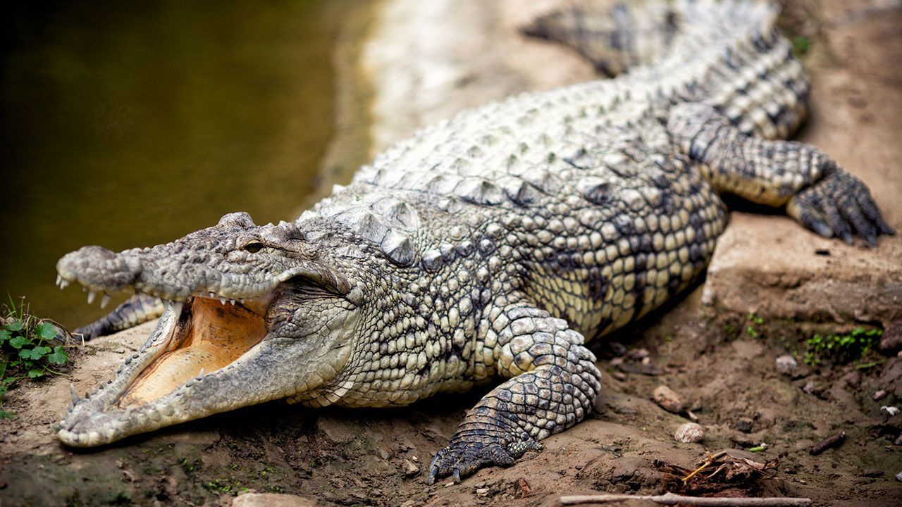
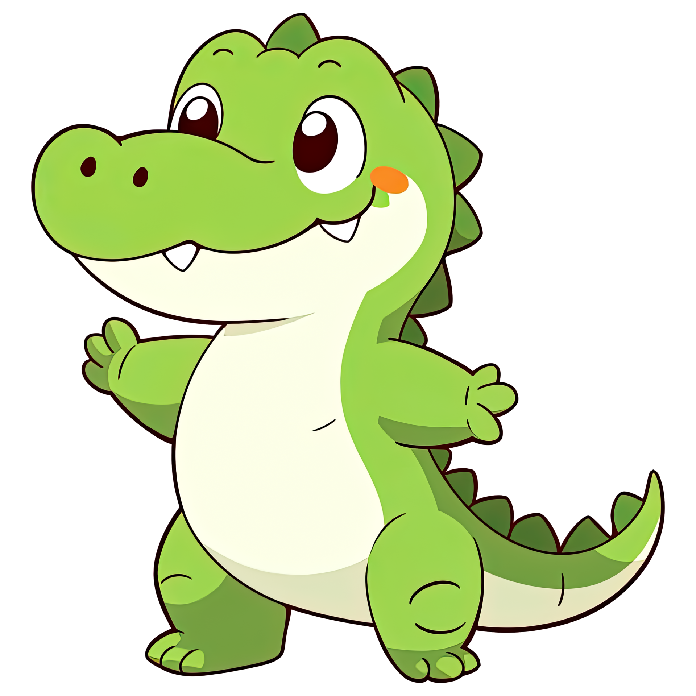
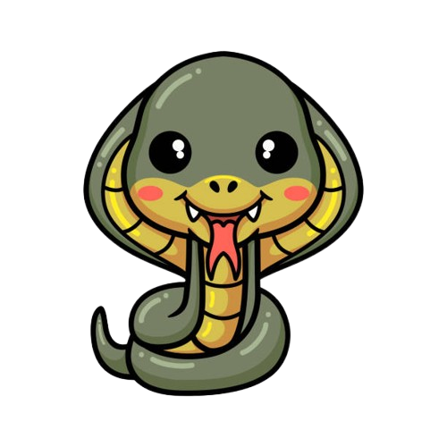
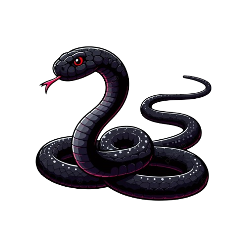
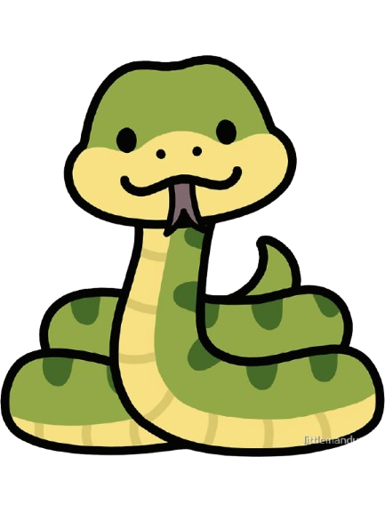
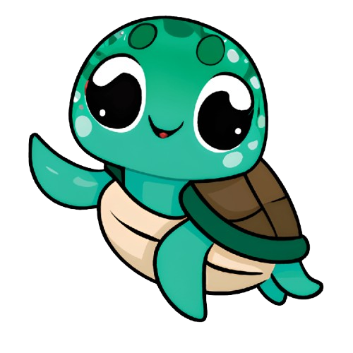
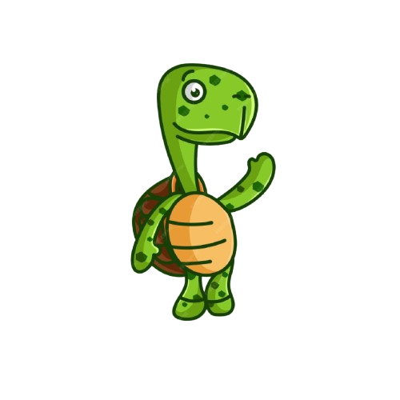
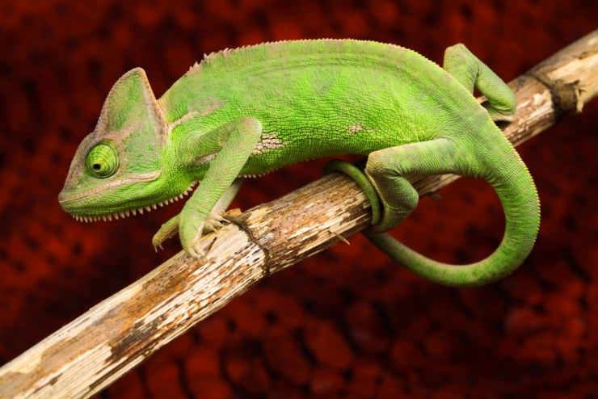
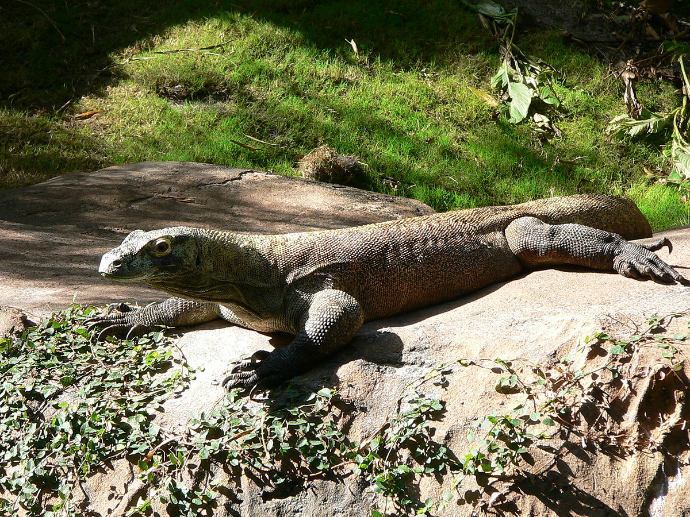
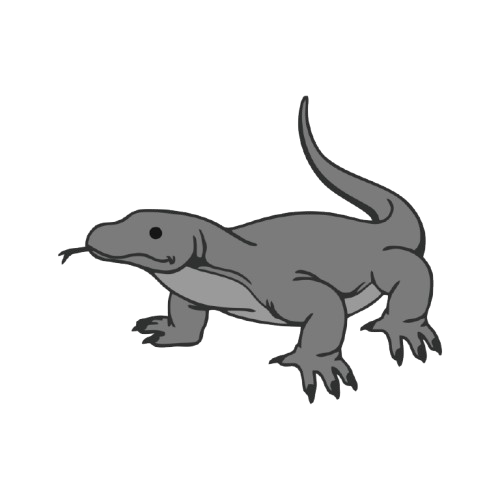

Cocodrilo

Hábitat: Se encuentran en ecosistemas de agua dulce,
como ríos y lagos, así como en ecosistemas de agua salobre,
como estuarios y manglares.
Alimentacion: Los cocodrilos adultos se alimentan principalmente de peces, aves, mamíferos y reptiles.
Los cocodrilos son reptiles grandes que se distinguen por su cuerpo robusto y alargado, cola musculosa, patas cortas y piel cubierta de escamas gruesas y resistentes, que les brinda protección y ayuda a regular la temperatura corporal. Poseen mandíbulas fuertes con numerosos dientes afilados, adaptados para capturar y desgarrar presas,
y ojos y fosas nasales situadas en la parte superior de la cabeza, lo que les permite observar y respirar mientras permanecen sumergidos. Son animales ectotermos, es decir, su temperatura corporal depende del entorno.
Datos curiosos
- Los cocodrilos no solo gruñen, también emiten vibraciones y vocalizaciones para comunicarse
- La fuerza de la mordida de un cocodrilo es tan intensa que pueden aplastar huesos y abrir caparazones de tortugas fácilmente.
- Los cocodrilos pueden contener la respiración bajo el agua hasta una hora

Cobra

Hábitat: Las cobras son muy versátiles y pueden ocupar distintos tipos de hábitat:Bosques húmedos y secos, Sabanas y praderas.
Alimentacion: Lagartijas, otras serpientes y, en algunos casos, huevos de reptiles. Las cobras incluso pueden depredar otras serpientes,
incluida su propia especie en situaciones de competencia o escasez de alimento.
Las cobras son un grupo de serpientes venenosas conocidas por su apariencia característica.
La Capucha: Su rasgo más famoso es que pueden aplanar su cuello formando una especie de "capucha" cuando se sienten amenazadas o enojadas. Esto lo hacen para parecer más grandes y peligrosas.
Veneno: Son muy venenosas. Inyectan una neurotoxina a través de sus colmillos que ataca el sistema nervioso de la presa (o de la persona mordida), pudiendo causar parálisis respiratoria.
Datos curiosos
- Evolucionaron para atacar a los humanos (a distancia)
- La Cobra Real "gruñe" en vez de sisear
- Son "caníbales" por excelencia La Cobra Real

Mamba negra

Hábitat:Sabanas, colinas rocosas y bosques abiertos del África subsahariana.
Alimentacion:Pequeños mamíferos (ratones, ardillas) y aves.
Su nombre científico significa "serpiente de árbol con muchas escamas", aunque curiosamente pasa mucho tiempo en el suelo.No es una serpiente que busque atacar, pero es famosa por ser la más nerviosa de todas.
Si se siente acorralada, no duda; ataca múltiples veces seguidas con una agresividad que pocas serpientes tienen.
Datos curiosos
- Es la serpiente más rápida del mundo, alcanza hasta 20 km/h.
- No se llama "negra" por su piel (que es gris o marrón), sino porque el interior de su boca es de color negro tinta.
- Su veneno es tan potente que una sola mordida tiene toxinas suficientes para matar a 10-15 humanos adultos

Anaconda

Hábitat:Ríos, pantanos y selvas tropicales de Sudamérica (Cuenca del Amazonas).
Alimentacion:Carnívora generalista (capibaras, caimanes, ciervos, peces).
Es la reina de las boas constrictoras. Es el reptil con mayor masa corporal de la Tierra actualmente.
Músculo puro: Imagina un cilindro de músculo diseñado para aplastar. No usa veneno; mata por asfixia (constricción), apretando el pecho de su presa cada vez que exhala aire hasta que el corazón de la víctima se detiene.
Adaptación acuática: Es una serpiente semiacuática. En tierra es lenta y torpe debido a su enorme peso, pero en el agua es ágil, silenciosa y letal. Sus ojos y narinas están situados en la parte superior de la cabeza, funcionando como un "periscopio" de submarino.
Datos curiosos
- Es la serpiente más pesada del mundo (puede pesar más de 200 kg).
- Sus ojos y nariz están en la parte superior de la cabeza para poder ver y respirar mientras el resto del cuerpo está sumergido.
- No pone huevos; da a luz a crías vivas (es ovovivípara).

Tortuga Boba

Hábitat:Océanos templados, tropicales y subtropicales de todo el mundo.
Alimentacion: Medusas, cangrejos, moluscos y peces.
Es una de las tortugas marinas más grandes y la más común en el Mediterráneo y el Atlántico norte.
La "Cabezona": Su rasgo distintivo (y la razón de su nombre en inglés Loggerhead) es su cabeza desproporcionadamente grande en relación con su cuerpo.
Trituradora natural: Esa cabeza alberga músculos mandibulares masivos. Mientras otras tortugas comen esponjas o pasto, la Boba es un "tanque" biológico diseñado
para romper las conchas más duras del océano (caracoles gigantes, cangrejos roca) que otros depredadores no pueden abrir.
Datos curiosos
- Su nombre en inglés es "Loggerhead" (cabeza de tronco) porque tiene una cabeza enorme con mandíbulas muy fuertes para triturar conchas duras.
- Recorren miles de kilómetros migrando, pero las hembras siempre regresan a la misma playa donde nacieron para poner sus huevos.
- El sexo de las crías depende de la temperatura de la arena: arena caliente produce hembras, arena fría produce machos.

Tortuga Plana

Hábitat: Aguas costeras poco profundas de la plataforma continental australiana.
Alimentacion: Pepinos de mar, medusas, corales blandos y camarones.
Es una rareza dentro del mundo de las tortugas marinas y es la única especie de su género (Natator, que significa "nadador").
Exclusividad australiana: Es la única tortuga marina que es endémica de un solo país (Australia). No cruza océanos enteros como sus primas.
Caparazón único: Su caparazón es muy diferente al tacto; es más suave, ceroso y tiene los bordes ligeramente levantados hacia arriba, como el ala de un sombrero. Además, es mucho más ligero, lo que le permite maniobrar mejor en aguas poco profundas.
Datos curiosos
- A diferencia de otras tortugas marinas, su caparazón es muy plano y liso (no abombado), lo que le da su nombre.
- Es la única tortuga marina que no viaja a mar abierto; se queda siempre cerca de la costa.
- Pone menos huevos que otras tortugas, pero son huevos más grandes y las crías nacen más fuertes para evitar depredadores.

Camaleon

Hábitat:Principalmente África y Madagascar, en selvas, desiertos y montañas.
Alimentacion:Insectos (grillos, saltamontes, moscas) y algunas especies grandes comen pequeños pájaros.
Es un lagarto altamente especializado que evolucionó estrictamente para la vida en los árboles (arborícola).
Cuerpo de pinza: Todo su cuerpo está diseñado para agarrarse. Sus patas son cigodáctilas (tienen los dedos fusionados en grupos de dos y tres, pareciendo pinzas de cangrejo) para sujetar ramas, y su cola es prensil, funcionando como una quinta pata.
Cazador pasivo: A diferencia de otros lagartos que corren tras su presa, el camaleón es un depredador de emboscada. Confía en volverse invisible y usar su lengua como un proyectil balístico.
Datos curiosos
- Sus ojos se mueven de forma independiente, dándoles una visión de 360 grados.
- Su lengua es más larga que su propio cuerpo y se dispara a una velocidad increíble (pasa de 0 a 100 km/h en una centésima de segundo).

Dragon de comodo

Hábitat:nas pocas islas volcánicas de Indonesia (Isla de Komodo, Rinca, Flores).
Alimentacion:Carroña, ciervos, cerdos salvajes e incluso búfalos de agua.
Es un varano, un tipo de lagarto caracterizado por tener cuellos largos, lenguas bífidas (como serpientes) y cuerpos robustos.
Megafauna sobreviviente: Es un vestigio de la prehistoria. Hace millones de años existían lagartos gigantes en Australia y Asia (como el Megalania), y el Dragón de Komodo es el último pariente vivo de esos gigantes.
Superdepredador: Está en la cima de la cadena alimenticia de su ecosistema. No tiene depredadores naturales.
Datos curiosos
- Son caníbales: los adultos a menudo se comen a los jóvenes, por lo que las crías viven en los árboles para protegerse.
- Pueden comer hasta el 80% de su peso corporal en una sola comida.